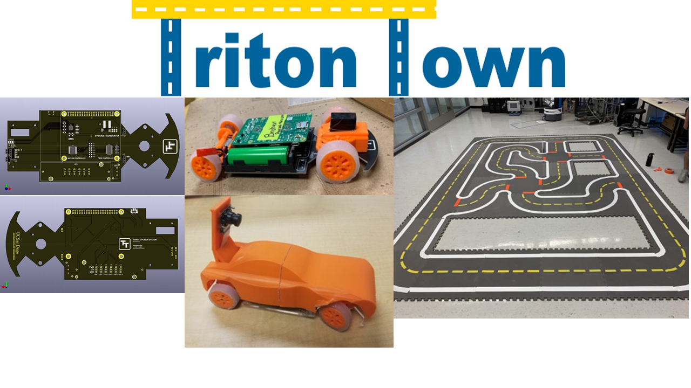

Triton Town -- An Autonomous Driving Vehicle Platform for Educational Purpose
UCSD

Inspired by MIT Duckie town, I worked to develop an autonomous driving vehicle platform with vehicles that are more like real RC cars. The system is designed to enable users to upload their own driving algorithm remotely to test the feasibility while the vehicles themselves are actively interacting with the town system. When the vehicle battery is low, the system should also have the ability of auto-charging by moving the vehicles to the charging station automatically. I built an indoor positioning system using apriltags and watch tower camera so that the system can easily get the location of each vehicle and send corresponding information to the vehicles to facilitate the future planning algorithms, which reduce the overhead for the vehicles to perceive the environment using traditional ways (lidar etc.).
This project is about multi-object-tracking for people. Based on object detection with YOLO v3, I used Simple Online and Realtime Tracking (SORT) with a deep association metric and an optical-flow feature tracker based on Kanade–Lucas–Tomasi (KLT) to enhance the tracking ability. YOLO v3 is used to detect all people within this frame with indexes, bounding boxes and scores. The detection results will be fed into deep SORT and the tracker will be updated. Given previous frame, current frame and current detection result, the Kanade–Lucas–Tomasi based optical flow algorithm will predict the possible positions of all people. Then the predicted positions will be fed into deep SORT and the tracker will be updated again.
ReadMe is a real-time recommendation system (RS) and an online algorithm for Mobile Augmented Reality (MAR) ecosystems. A MAR ecosystem is the one that contains mobile users and virtual objects. The role of ReadMe is to detect and present the most suitable virtual objects on the mobile user's screen. The selection of the proper virtual objects depends on the mobile users' context. I helped to build prototype of ReadMe on android operating system. I used information acquired from build-in sensors of the phone (GPS etc.) to get the geographical information of the user as well as the direction the user is facing, so that I can get the corresponding information from the database and present to the user on the camera screen using augmented reality techniques.